一、课程设计要求与目的
- 模仿个人银行账户管理系统的C++版本（第4章-第9章），使用Java语言重新实现该系统，比较C++与Java在实现上的异同，熟练掌握Java基础及语法。
- 根据业务需求的增加，对个人银行账户管理系统进行功能上的完善，利用面向对象的思想对代码进行重构，体会抽象、封装、继承、多态等特性在实际系统中的应用，掌握构造可复用、可扩展、可维护软件的基本技能。
二、课程设计版本记录
1 、个人银行账户管理系统版本0.1（对应第4章记录）
1.1 系统需求
能够建立账户，其中账户包括账号、余额、年利率，上次变更日期，余额按日累加之和。需要实现功能：记录一笔账、获得到指定日期为止的存款金额按日累加值accumulate、获取ID、获取余额、获取利率、存入现金、取出现金，每年进行一次结算利息，显示账户信息。
1.2 系统设计
设计类 SavingsAccount 包括成员账号id、余额balance、年利率rate，上次变更日期lastDate，余额按日累加之和accumulation。包括方法记录一笔账record、获得到指定日期为止的存款金额按日累加值accumulate（）、获得ID getID（）、获得余额getBalance（）、获得年利率 getRate（）、存入现金 deposit（）、取出现金 withdraw（）、结算利息 settle（）、显示账户信息 show（）。当余额变动时，需要做的是将变动前的余额与该余额所持续的天数相乘，累加到 accumulation中，再修改 lastDate。用来结算利息，因为余额变化，会导致利息不一样，所以，每次余额变动都要累计计算。
1.3 系统实现
对重要的类及内部的数据结构进行介绍（可以适当的贴一些代码，比如类的定义） 、
类定义如图：
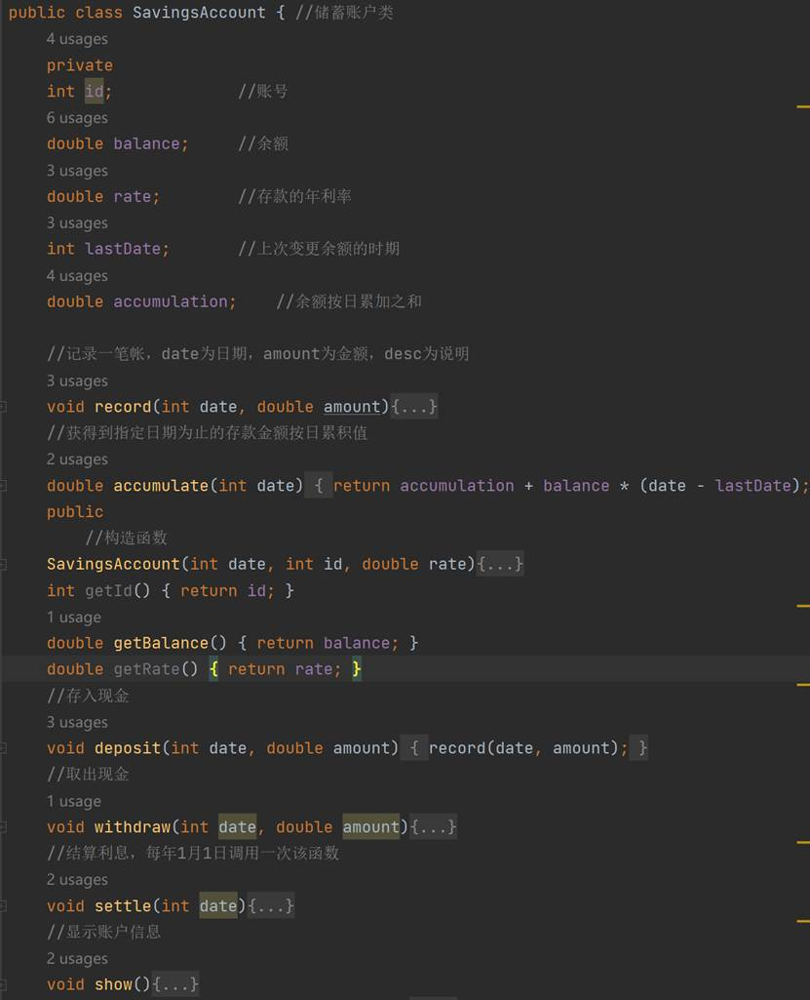
1.4 系统测试
能够创建账户，进行存款，取款，计算余额，符合设计预期。
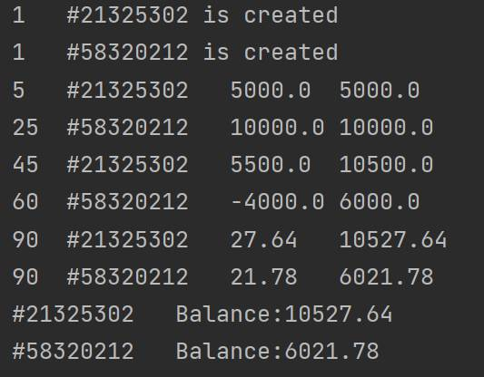
1.5 体会心得
利息结算和累计函数设计十分巧妙，可以很方便的结算利息。
实现同一项目，Java比C++更严谨，全想对象语言实现起来也更方便。
实例化对象时Java相比于C++需要使用关键字
new。第一个部分的修改，也弥补了很多C++没有学到的面向对象的基础知识。
2 个人银行账户管理系统版本0.2（对应第5章记录）
2.1 系统需求
新增了静态属性与方法，用来计算当前所有账户总金额。
2.2 系统设计
在 SavingAccount 中添加静态成员变量 total ，同时添加相应成员函数 getToatal（），并将不需要修改的，设置成常成员函数。
2.3 系统实现
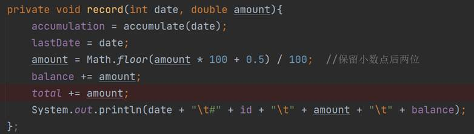
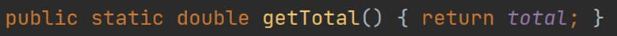
2.4 系统测试
增加了 total 所有账户总额的显示结果，符合预期。
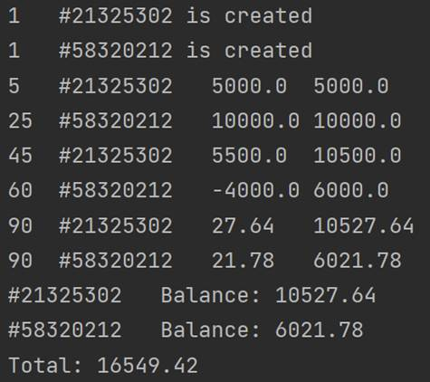
2.5 体会心得
静态数据成员仅由静态成员方法访问。
Java没有const关键字，C++中的const类似于Java的final。同时书写的位置有所不同。C++调用类的静态成员函数是<类名>::<函数名>，而Java是<类名>.<函数名>。
3 、个人银行管理系统版本0.3（对应第6章记录）
3.1 系统需求
新增了字符串和对象数组，用字符串存储ID，余额不足不能取钱，并显示错误，能够更直观的显示日期。
3.2 系统设计
设计日期类 Date ，其中包括数据成员 DAYS_BEFORE_MONTH[]数组，用来存储某月1日前有多少天， year、month、day、totalDays该日期是公元元年1月1日开始的第几天，设计函数 distance（）计算两个日期相差多少天，函数 show（）显示年月日。
3.3 系统实现
描述账号的数据类型由int改为string。描述日期的数据类型由int改为Date类，并为deposit,withdraw和settle并增加了一个用来存储该笔账目信息的string型的desc参数。增加一个专用于输出错误信息的error方法。
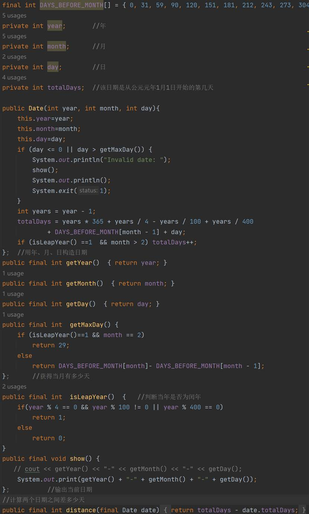
3.4 系统测试
能够更直观的看到日期，同时能够使用字符串存储账号和说明文字，符合设计预期。
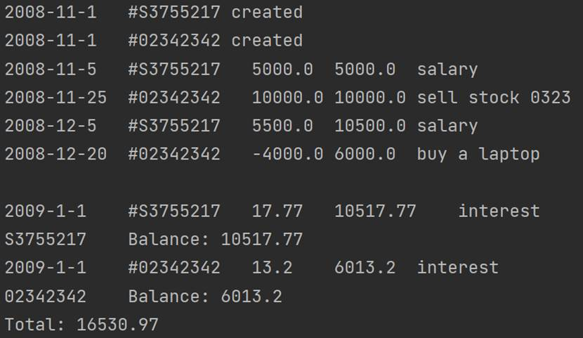
3.5 体会心得
Java数组必须先初始化才可以使用，初始化的时候会分配内存；动态初始化和静态初始化不能同时存在。Date类的设置，使得用户能够更直观的输入或者读出日期时间，同时，程序员也能很方便的设计日期相关的操作，十分便捷。增添的备注功能，记录哪笔账去哪里，也更加符合现实生活的需求。
4、个人银行管理系统版本0.4
4.1 系统需求
增加了信用账户的需求：
信用账户允许透支，每个信用账户都有一定的信用额度，总的透支金额应在这个额度之内。
如果信用账户内存钱，不会有利息，但使用信用账户透支则需要支付利息，从透支那一天其就开始计算利息。
信用账户每月进行以及结算，假定结算日为每月的1日。每年需要交一次年费，假定每年1月1日结算的时候扣缴年费。
4.2 系统设计
设计一个基类
Account用来描述所有账户的共性，派生出SavingsAccount类储蓄账户，和CreditAccount类信用账户。在基类
Account中，保留数据成员:id账号，balance余额，total静态数据成员账户总金额，成员方法:show（）输出信息。原来的record（）,error（）方法的访问控制权限修改为protected，供派生类调用，同时还有一个保护的构造方法。在派生类中实现，处理存款的成员方法
deposit（）、处理取款的成员方法withdraw（）、处理结算的成员方法settle（）。储蓄账户用来表示年利率的rate（）、信用账户用来表示信用额度的credit（）、表示日利率rate（）、表示年费fee（）以及其获取他们的成员方法。创建一个新类
Accumulator用来实现各个账户的按日累加和的功能，设计Accumulator类类型的累加器acc在两个派生类中分别实现各自功能。
4.3 系统实现
Accumulator 将某数值按日累加
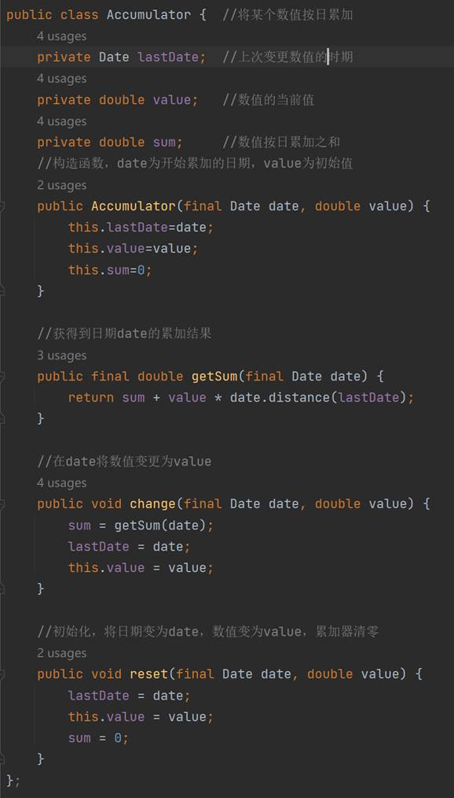
派生类信用账户的实现：
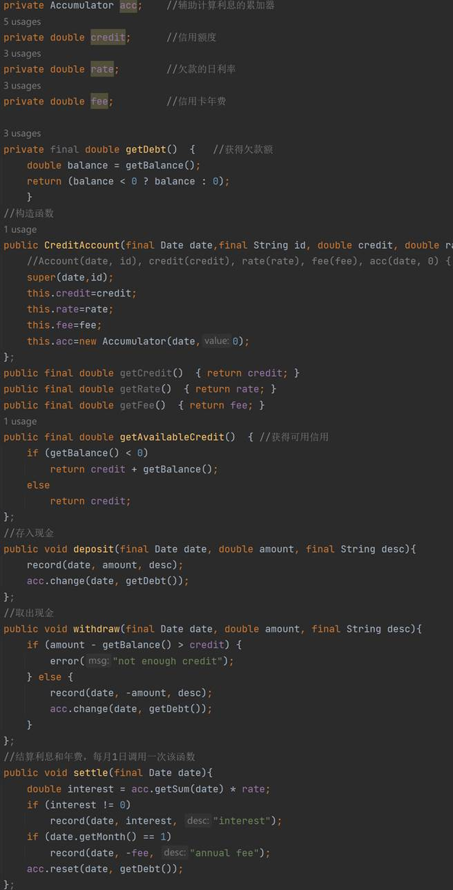
4.4 系统测试
能够正常完成信用账户的借款，还款，计息，以及计算年费的操作符合设计预期。
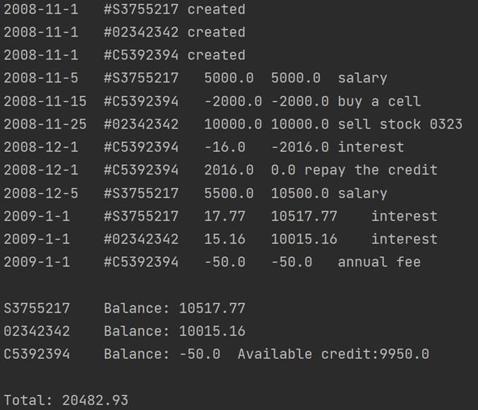
4.5 体会心得
- 这一版本因为增加了一个与 储蓄账户 类似的 信用账户类的需求，所以为了简化实现，同时减少代码量，设计一个共同的父类
Account类来派生出需要的两个子类。 - 此时就能十分明显的显示出面向对象编程设计软件在需求变更时的好处，开发者在更新时，只需要不断地增加新的功能模块，不用重构之前的内容，大大减小了开发的时间成本。
5 个人银行管理系统版本0.5
5.1 系统需求
实现交互，能够通过键盘输入，进行操作。改进测试方法，使其更便于操作，改进类之间的关系，使其更便于调用。
5.2 系统设计
将 Account 设置为抽象类，将相应函数设计为抽象函数，存钱 deposit（）、取钱 withdraw（）、结算 settle（）。并设置Account类类型的数组，实现循环调用等操作。
5.3 系统实现
- 类类型数组
accounts[]定义
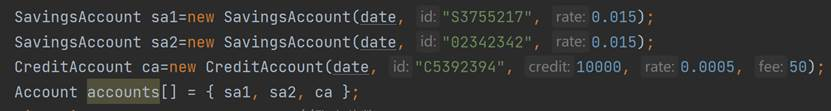
- 循环交互实现
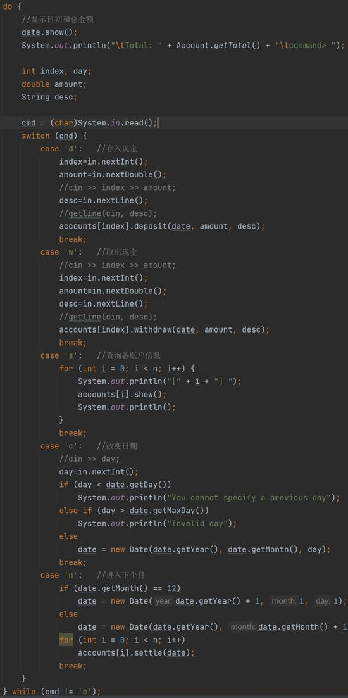
- 父类
Account的抽象函数
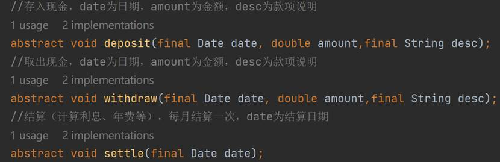
- 子类
SavingsAccount储蓄账户类的实例化
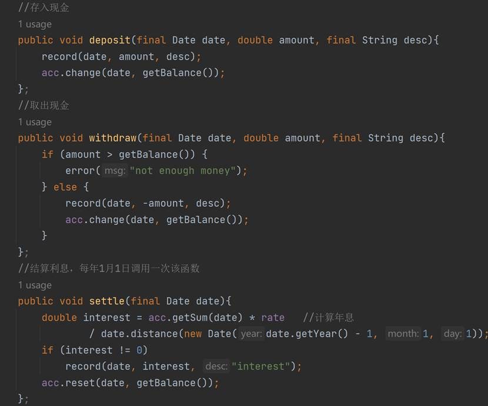
- 子类
CreditAccount信用账户类的实例化
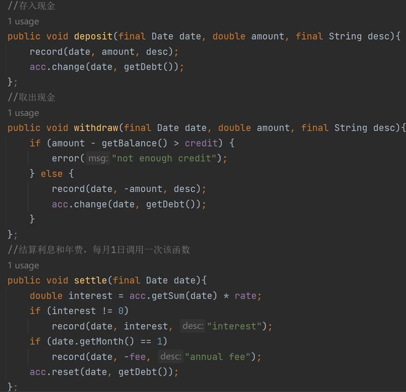
5.4 系统测试
交互测试，分别测试了存钱，取钱，下一个月，结算年息等等，符合设计要求。
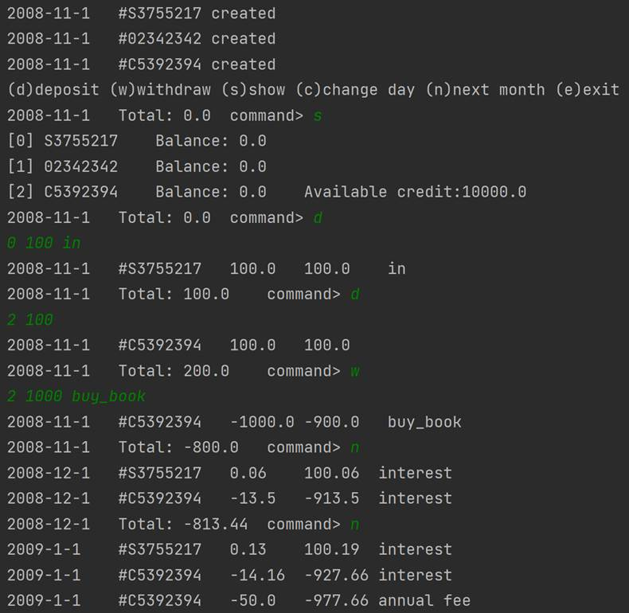
5.5 体会心得
能够交互的测试，使得系统更直观，更贴近实际，用户能更方便的操作该系统。类类型的数组的使用使得代码中类的循环能更方便的实现，而抽象类的运用就能够实现类类型的数组。
6、个人银行管理系统版本0.6
6.1 系统需求
在上一版本中，使用父类对象数组来处理不同派生类对象，从而实现多态性调用，第六个版本中使用Java中自带的ArrayList来代替原来的对象数组，以实现动态的改变大小，添加新账户的功能。系统设计
6.2 系统实现
在主函数类中导入Java实用包中的ArrayList，创建对象数组。
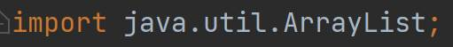
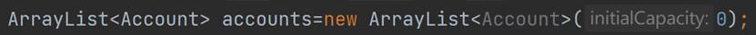
6.3 系统测试
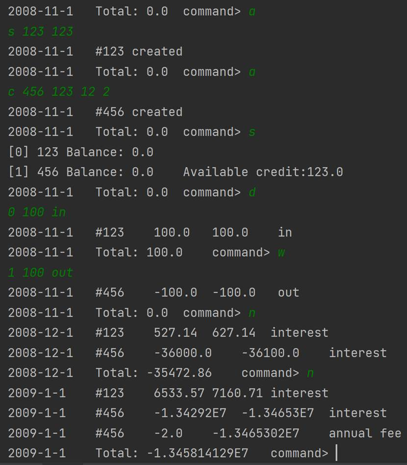
6.4 体会心得
相较于C++，Java提供了现成的包 ArrayList 不需要单独写，同时，Java也不支持重载。相较于上一个版本，能够更便捷的统一管理它的子类，代码能够更便捷。
三、课程设计总结
1、最终实现功能：
日期计算功能、日期累加功能
储蓄账户 SavingsAccount（基本的账户信息的存储、按日期产生的利息）
信用账户 CreditAccount（基本的信用账户信息的存储、按日期产生的欠款金额、信用额度、年费）。
2、Java特性
1.1封装:
对于系统的每一个功能，如Account、Date、SavingsAccount、CreditAccount等功能都是用类实现的，其中每一个类中需要和外界通讯的数据成员、成员方法先定义了具体的权限，如public、protect等，而无需通讯的私有成员则为private，使得最后的各功能只提供一些接口参数，而不是具体的实现细节，使用（调用）者无需关心其内部的实现便可实现自己的功能。
1.2继承:
该系统设计了一个各账户共同的父类： Account ， 其他两个账户类都是由此继承出，他们有一些共同的方法、数据成员由父类实现（或声明），而其不同则由自己声明实现。
1.3多态:
对于一些子类继承自父类的数据成员，成员方法，他们中的一些的实现与父类略有不同，覆盖了原父类的内容，使得最后同一个方法有多种实现以供用户不同的需求。
3、问题及解决方法：
3.1关于运算符重载：C++中有运算符重载的功能，可以简单的实现两个类之间逻辑上的四则运算，通过查阅资料后得知Java中取消了运算符重载的功能，统一使用方法调用来代替原有功能。
3.2文档及注释：通过搜索别人博客了解到Java可以通过一些具体的语法格式进行注释，之后便可自动生成文档。
3.3工程规范性：一开始不能很清楚的理解Java的文件结构，新建了很多工程，文件混乱，后学习发现，应该在一个工作环境中新建不同的包。
3.4数学函数：使用某些数学公式时，C++需要写cmath的头文件，而JAVA则直接用Math即可。
3.5父类与子类：在使用父类引用指向子类对象的时候，要注意只能调用子类从父类继承过来的方法，如果要调用子类特有方法，需要向下转型。
3.6修改第五版，交互问题的时候，许多输入输出上格式的错误，对照C++的输出从类的show（）函数一点点修改，其中经过断点调试发现，System.in.read()读入了换行符‘\n’,使得显示用户信息后，输出两遍‘commend>’,将输入修改为cmd = in.next().charAt(0)后，输入输出正确。
4、收获：
这个银行管理系统的完成让我熟悉了Java的基本语法，同时体会到了Java与c++的不同的程序设计思想；在完成项目的同时遇到了很多的问题，但是都通过自己独立查阅资料逐一解决。了解到Java作为面向对象编程的语言实现项目代码时更具有工程规范性。实验报告的书写也使我清晰的认识到了一个简单项目从用户需求到系统设计、系统实现及最后的代码的编写测试这一个流程，最后的代码间的联系从而更加地清晰明了。
此外通过每一版本的需求的更新以及系统的实现，我体会到了面向对象程序设计在实现功能的过程与面向过程以及C++面向对象程序设计的不同，Java中万物皆为类的思想牢牢印在我的心中，即使和C++主函数同意义的Main方法一样也是类，从最开始的一个储蓄活期账户的功能的实现，date类的实现以及累加日期类的实现，从而实现了系统的基本功能，此后新增活期账户功能类似的信用账户的需求，通过比较两个类的共同特点，抽象出其共同的父类Account，这样使得一些共同点得以复用，减少代码量的同时也使得各类之间的关系增强，同时在最后几个版本中，因为Java中父类的引用同时可以引用其子类的特点，使得通过一个父类的对象数组便可以轻易的操纵其子类，使得最后的循环处理测试时的代码可以有不同类对应不同操作代码合二为一，大大的使程序的可读性增强，代码量减少，开发的负担也减轻许多，最后的ArrayList声明的对象数组也使得开发者不必关心数组空间的分配问题，从而使程序的安全性增强。
Java的工程设计结构，能够十分方便的不断扩展功能模块，所以需要设计者在设计时，需要有清晰的思路，有一定的预见性，给程序设计足够的修改，进步空间。也了解到了几个Java设计的基本原则，其中印象深刻的有，开闭原则：在程序需要进行拓展的时候，不能去修改原有的代码，实现一个热插拔的效果。简言之，是为了使程序的扩展性好，易于维护和升级。而抽象化是开闭原则的关键。想要达到这样的效果，我们需要使用接口和抽象类。该项目中，就是Account及其子类的关系。以及单一职责原则：定义：类的职责要单一，不能将太多的职责放在一个类中，因为一个类职责越多，被复用的可能性越小，粒度越小越可能被复用。单一原则是针对实现类的设计模式。比如Date类和Accumulate 类，都是单独实现一个小的功能。
最后，这个项目虽然是修改，代码量并不多，但是真真正正第一次体会了一个小的系统，功能很少的系统，是如何一步步不断完善，有越来越多的功能，越来越庞大。